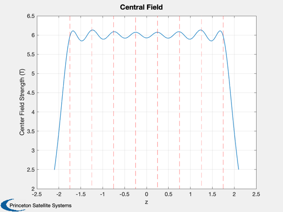

Contents
Field strength and currents for PFRC coils
See also EllipsoidalSolenoid, ConcentricCoils, MagneticFieldCurrentLoop,
%-------------------------------------------------------------------------- % Copyright (c) 2016 Princeton Satellite Systems, Inc. % All rights reserved. %-------------------------------------------------------------------------- % Calculate radii assuming coils are smaller at the ends z = [-1.75 -1.25 -0.75 -0.25 0.25 0.75 1.25 1.75]; a = EllipsoidalSolenoid( 0.4, 0.5, z ); fprintf(1,'Radii of coils (m): %g %g %g %g %g %g %g %g\n',a) % Calculate currents to give a smooth interior field bA = 6; [b,i,zs] = ConcentricCoils( z, bA, a ); fprintf(1,'Field strength: %g T\n',bA) % Plot the central field variation Plot2D(zs,b,'z','Center Field Strength (T)','Central Field'); yy = axis; hold on plot((z'*[1 1])',(ones(8,1)*yy(3:4))','r--')
Radii of coils (m): 0.4 0.452769 0.484768 0.5 0.5 0.484768 0.452769 0.4 Field strength: 6 T
Field at the conductors
Use all of the coils EXCEPT the one you are checking, which will give an infinite result
% Field at the center - decreases with increasing radius d = z; % SJT lost definition of d think maybe it was the same as z?? pCoil = [d;zeros(2,8)]; qCoil = repmat([1;0;0;0],1,8); x = [zeros(1,10);zeros(1,10);linspace(0,0.5,10)]; bCenter = MagneticFieldCurrentLoop( i, a, pCoil,qCoil,x ) % Field at a coil location due only to the other coils bEdge = []; kCoils = [1:3 5:8]; bEdge(:,1) = MagneticFieldCurrentLoop( i(kCoils), a(kCoils), [d(kCoils);zeros(2,7)],... repmat([1;0;0;0],1,7), [z(4);0;a(4)] ); kCoils = [1:2 4:8]; bEdge(:,2) = MagneticFieldCurrentLoop( i(kCoils), a(kCoils), [d(kCoils);zeros(2,7)],... repmat([1;0;0;0],1,7), [z(3);0;a(3)] ); kCoils = [1 3:8]; bEdge(:,3) = MagneticFieldCurrentLoop( i(kCoils), a(kCoils), [d(kCoils);zeros(2,7)],... repmat([1;0;0;0],1,7), [z(2);0;a(2)] ); kCoils = [2:8]; bEdge(:,4) = MagneticFieldCurrentLoop( i(kCoils), a(kCoils), [d(kCoils);zeros(2,7)],... repmat([1;0;0;0],1,7), [z(1);0;a(1)] ); % Self-field - assume uniform current and a cable radius r r = 0.05; % assume 5 cm stack bSelf = 4e-7*pi*i/2/pi/r % total maximum fields bWire = bEdge(1,:) + bSelf(1:4); fprintf(1,'Field strength at wire inner edge: %g %g %g %g T\n',bWire) %--------------------------------------
bCenter =
Columns 1 through 6
5.9268 5.9174 5.8856 5.8197 5.6958 5.4722
0 8.9074e-34 1.8778e-33 -3.5148e-33 -3.563e-33 -4.8148e-33
0 1.0408e-17 -9.541e-18 -5.2042e-18 -4.5103e-17 1.2143e-17
Columns 7 through 10
5.0858 4.4647 3.5814 2.533
-6.6445e-33 8.0889e-33 -3.8519e-34 -9.2445e-33
-8.6736e-17 -1.0061e-16 -7.4593e-17 -6.5919e-17
bSelf =
Columns 1 through 6
11.322 10.068 10.055 10.032 10.032 10.055
Columns 7 through 8
10.068 11.322
Field strength at wire inner edge: 12.7286 11.4437 11.3579 10.9837 T